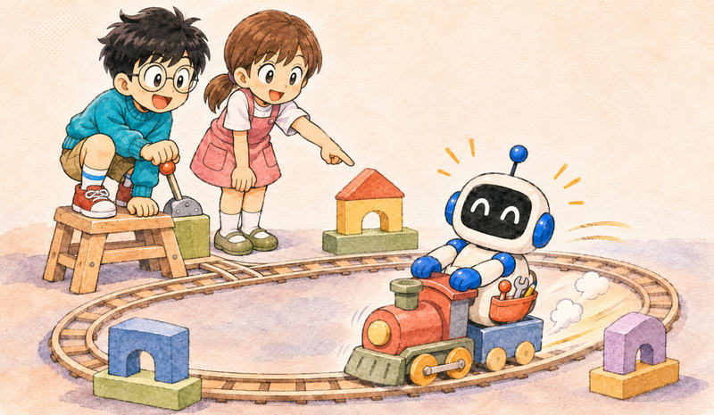
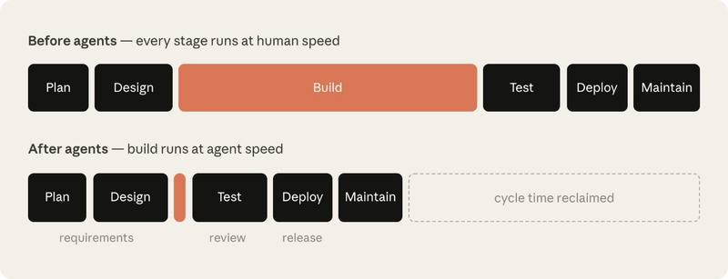
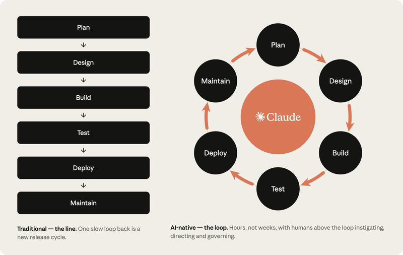

Feature 04 · ARTICLE · 2026 08
The AI-native SDLC playbook
Organizations now use AI to write code at a speed unthinkable one year ago, yet the approval gates, reviews, handoffs, and policies around the code haven’t changed at the same pace. The traditional SDLC was designed for an era when writing code was the slowest and most expensive stage, which is no longer the case. When build collapses to hours, three things become true. The bottleneck moves to plan, review/test, and deploy, which still run at human speed. Line-by-line human review can’t keep up once agents write most of the diff. And governance costs increase, because exceptions still route through committees that meet weekly or monthly. The AI-native SDLC keeps the old control objectives and adds new enforcement. The process becomes a loop: each stage commits an artifact to version control (intent.md, spec.md, plan.md, the diff and its tests, the PR and its findings, the incident record), and the next stage begins by reading it. The chain of commits is the audit trail. Humans remain accountable for every decision that requires judgment; their attention moves to the gates.

The plays are modular, and each names its prerequisites. You begin by prompting each step by hand. The end state is a loop in which each accepted artifact fires the next gate: an accepted intent.md triggers design, an approved spec.md triggers plan mode, a merged PR triggers the pipeline, and a breach in production writes the next intent.md.
Plan

An idea no longer passes through backlog entries, story points, and refinement meetings, with ownership changing at each handoff. The originator describes the problem to Claude in their own words. Claude asks the questions an analyst would ask: scope, users, constraints, what success looks like. It then writes the result as intent.md from the organization’s template. The originator corrects it and commits it to a shared, version-controlled home, often an intent/ folder in the product repo. The product owner reviews and approves, and the merge or the closed review records the decision. The expectation is that time from first conversation to committed intent.md falls from a multi-week cycle to hours.
Design

Requirements and design collapse into one session. Claude takes the accepted intent.md and produces a requirements and design spec, constrained by the organization’s skills for brand, security, compliance, and UX, with areas of concern flagged. The product owner reviews the spec but doesn’t write it, and resolves each flagged concern with its policy owner before engineering sees it.
Run this pass by hand first, then as an organization-level slash command, then as a non-interactive job that fires when intent.md merges and opens spec.md as a pull request. A human always decides whether the spec goes to build, consulting a technical lead for anything classed as higher risk. Policy is applied while the spec is written, not discovered in a review weeks later.
Build
Plan mode. Nothing is implemented without an accepted plan. In plan mode Claude can read the codebase but cannot edit files until the engineer accepts the plan. The engineer asks what the change could break, which step is riskiest, and what options Claude rejected, and iterates until someone who never saw the conversation could implement it. The approved plan is committed as plan.md. With a solid plan, implementation is often a single pass. As guardrails mature, auto mode becomes the default for routine work: a tight spec, a small blast radius, code the tests already cover.
CLAUDE.md. It gives Claude what a new joiner needs on day one: commands, conventions, architecture, and the mistakes Claude keeps making. Generate it with /init, cut it down, check it in, and keep it under a page. When Claude makes a mistake twice, the correction goes in.
Skills and hooks. Write a skill for institutional knowledge that must be applied consistently, such as a security standard or an API convention. A skill is an advisory control: nothing forces a session to comply. A policy that must always hold needs a hook or a review pass behind it. The skill makes violations rare and the hook makes them close to impossible. Build-phase hooks block edits to protected paths, run the formatter and linter after edits, and keep credentials out of the diff. They should be fast and scoped to the changed file; heavier checks belong at the commit or PR.
Test
A feedback loop. Always give Claude a way to verify its own work: tests, a build, or a screenshot diff. Wrap checking in one command that exits non-zero on failure, and state a quantifiable target. For bug fixes, have Claude write the failing test first, confirm it fails for the expected reason, and commit it. Only then let Claude make it pass. The loop needs protecting, because an agent fixing code must not be able to weaken the check: a hook blocks edits to test files during a fix, or review rejects any diff that touches a test.
Continuous evals. Collect 20 to 50 real tasks with their accepted outcomes. Run them non-interactively in CI on a schedule and on any change to CLAUDE.md, skills, or hooks, since that configuration steers the agent. Gate configuration changes on the pass rate. Each production incident becomes a permanent eval. As models improve, cases stop discriminating and new ones must be added.
Deploy
The agent does everything up to the production gate and nothing past it.
PR review. Claude reviews incoming PRs against a REVIEW.md written by the tech lead, covering bugs, security, and compliance with spec.md and plan.md, and defining what counts as Important as opposed to a Nit. Findings don’t approve or block a PR on their own; branch protection still requires a code owner. A mistake flagged twice goes into CLAUDE.md. The agent that wrote the code has no way to approve it.
Hooks as approval gates. A hook can allow, block, or ask, pausing until a named person approves. Team hooks live in .claude/settings.json. Non-negotiable ones go in managed settings that engineers cannot switch off. A regulated enterprise can deny secret reads and network egress, pre-approve the safe inner loop, and enforce an OS-level sandbox. Every deny trades against capability, so treat such a configuration as a starting point to tailor, not one to copy.
CI/CD. Start with read-only judgment steps through claude -p: triage a failed build, summarize a flaky test, draft the changelog. Then add write steps that arrive as PRs, with no route to main. Run agent jobs sandboxed, with short-lived scoped tokens and no standing production credentials. In development the agent deploys freely. In production it prepares the release and a release manager authorizes it. Rollback should be the most rehearsed path in the pipeline.
Maintain
The loop closes: a trigger invokes Claude with no person in the path, and its findings re-enter as intent.md.
A deterministic, unit-tested script watches one metric with a stable baseline, such as CI test failure rate, using rolling mean and standard deviation with Western Electric or similar rules. No model is involved in detection. Tiers live in version-controlled config. At 1σ the script logs. At 2σ Claude diagnoses read-only. At 3σ Claude may act, but only by opening a PR into the review gate or triggering a pre-approved runbook. Claude writes its diagnosis as intent.md, and the service owner triages: fix now, schedule, or dismiss. Dismissals tune the bands. Each shipped fix adds an eval.
Scheduled security scans and Claude in incident channels feed the same loop: a bounded fix goes through the PR gate, and anything wider becomes intent.md.
Closing
Models and harnesses now allow organizations to transform not just how they produce code but the entire lifecycle, while keeping human judgement central and meeting the governance needs of large enterprises. The loop keeps running. Human judgement stays above it.